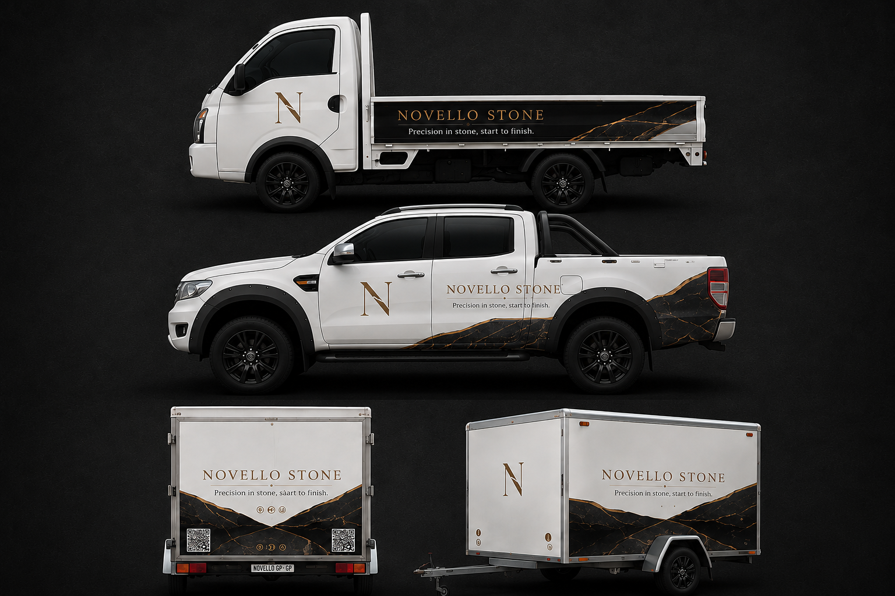

Fabrication, tiling, and restoration under one owner-operated business. We measure twice, quote straight, and finish what we start.
Novello Stone is an owner-operated stone and surface solutions business serving the Garden Route corridor, built on 15+ years of combined, tool-in-hand experience. We work across three connected pillars — fabrication, tiling, and restoration — so a client gets one accountable point of contact instead of three separate contractors.
Bridge saw cutting, slab work, and custom surfaces in marble, engineered stone, and quartzite. Templating through installation.
Residential and commercial tiling, all formats. Clean lines, correct drainage, and finishes that hold up under real-world use.
Grind-and-repolish, sealing, repairs, and ongoing maintenance contracts that keep stone surfaces performing for years.
We assess the surface, measure accurately, and scope the real work — not a guess.
A clear, itemised quote with material and labour shown separately. No surprises later.
A deposit secures your slot and covers material. We confirm a firm start date.
Work is completed, inspected, and signed off with you before final payment.

Every job is mobile-first. Our vehicles carry the tools, trailer, and crew needed to get on site and get it right — from Mossel Bay to Plettenberg Bay.
We started with one Ranger, a trailer, and a phone number. Every vehicle since got added because the work demanded it — not because it looked good on a website. That's still how we grow: one job, one client, one vehicle at a time.
For fabrication and larger tiling jobs, yes — we need to see the surface and measure it properly before we'll put a number on it. For smaller repairs or restoration work, photos and a phone call are often enough for a straight quote.
A deposit is collected before work begins on every job, sized to the materials involved. Material and labour are itemised separately on the quote, so you see exactly what it covers.
Yes — that's the point of running it as one business. One accountable point of contact plans and coordinates all three, instead of you managing three separate contractors.
Regular work runs the length of the Garden Route corridor, from Mossel Bay all the way to Plettenberg Bay. For the right project, distance isn't a dealbreaker — we've taken on special trips anywhere in South Africa. If it's worth doing properly, we'll get there.
It depends on scope. Your quote comes with a realistic timeline, and if anything shifts once we're on site, you hear about it from us before it becomes a surprise.
Us, either way. Not sure what category something falls under is one of the most common calls we get — we'd rather help you find the right fit than have you guess and call the wrong trade.
Tell us what you're working with. We'll come back with a straight quote — no pressure, no inflated estimate.
Request a Quote